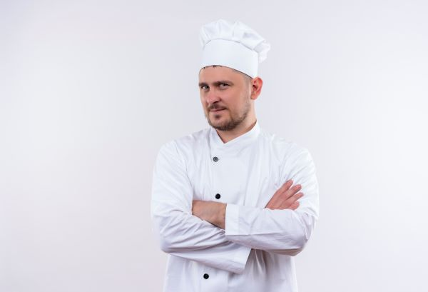
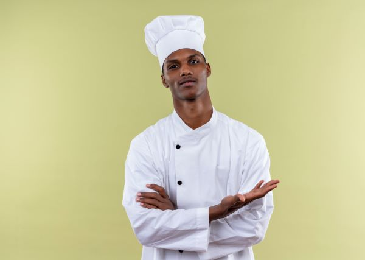
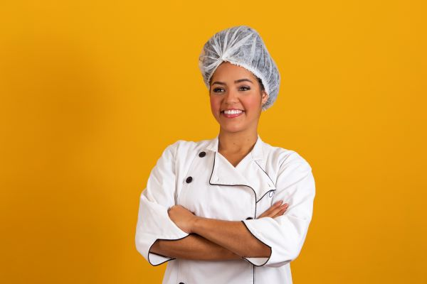

Chefs inscritos
-
Chef John Doe
Experto en cocina italiana, con habilidades excepcionales en pasta fresca y risottos.
-
Chef Jack Smith
Conocido por su creatividad en la cocina asiática, especializado en sushi y platos de wok.
-
Chef Michael Johnson
Maestro en cocina francesa, famoso por sus deliciosos platos de carne y salsas exquisitas.
-
Chef Emilio Rodriguez
Especialista en cocina mexicana, conocido por su auténtico guacamole y tacos de carne asada.
-
Chef David Donowan
Experto en cocina mediterránea, famoso por sus platos de pescado fresco y ensaladas saludables.
-
Chef Maria Garcia
Hábil en la cocina latinoamericana, conocida por sus platos de ceviche y asados.